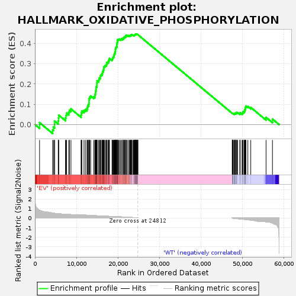

| | | Dataset | EV_WT_express.EV_WT.cls#EV_versus_WT |
| Phenotype | EV_WT.cls#EV_versus_WT |
| Upregulated in class | EV |
| GeneSet | HALLMARK_OXIDATIVE_PHOSPHORYLATION |
| Enrichment Score (ES) | 0.44640926 |
| Normalized Enrichment Score (NES) | 1.228747 |
| Nominal p-value | 0.04923077 |
| FDR q-value | 0.2629975 |
| FWER p-Value | 0.977 |
Table: GSEA Results Summary

Fig 1: Enrichment plot: HALLMARK_OXIDATIVE_PHOSPHORYLATION
Profile of the Running ES Score & Positions of GeneSet Members on the Rank Ordered List
| SYMBOL | TITLE | RANK IN GENE LIST | RANK METRIC SCORE | RUNNING ES | CORE ENRICHMENT | | 1 | PHYH | NNN | 1116 | 0.822 | 0.0094 | Yes |
| 2 | NDUFA7 | NNN | 4274 | 0.520 | -0.0265 | Yes |
| 3 | IDH2 | NNN | 4453 | 0.505 | -0.0121 | Yes |
| 4 | ACADSB | NNN | 4728 | 0.491 | 0.0002 | Yes |
| 5 | MRPS11 | NNN | 4732 | 0.490 | 0.0171 | Yes |
| 6 | IDH1 | NNN | 5618 | 0.449 | 0.0176 | Yes |
| 7 | BCKDHA | NNN | 5675 | 0.447 | 0.0321 | Yes |
| 8 | CYB5R3 | NNN | 5741 | 0.443 | 0.0463 | Yes |
| 9 | ACAA2 | NNN | 7369 | 0.414 | 0.0328 | Yes |
| 10 | SLC25A12 | NNN | 7494 | 0.408 | 0.0448 | Yes |
| 11 | ATP6AP1 | NNN | 7613 | 0.403 | 0.0567 | Yes |
| 12 | ALDH6A1 | NNN | 8139 | 0.382 | 0.0610 | Yes |
| 13 | NDUFC1 | NNN | 8329 | 0.372 | 0.0706 | Yes |
| 14 | MTRF1 | NNN | 8684 | 0.360 | 0.0770 | Yes |
| 15 | OXA1L | NNN | 11120 | 0.338 | 0.0472 | Yes |
| 16 | PRDX3 | NNN | 11187 | 0.336 | 0.0577 | Yes |
| 17 | CS | NNN | 11313 | 0.332 | 0.0670 | Yes |
| 18 | MRPS15 | NNN | 11817 | 0.316 | 0.0694 | Yes |
| 19 | GOT2 | NNN | 12156 | 0.306 | 0.0742 | Yes |
| 20 | UQCR11 | NNN | 12543 | 0.296 | 0.0778 | Yes |
| 21 | ETFDH | NNN | 12671 | 0.293 | 0.0858 | Yes |
| 22 | MRPL35 | NNN | 12739 | 0.291 | 0.0947 | Yes |
| 23 | GPI | NNN | 12966 | 0.284 | 0.1007 | Yes |
| 24 | NDUFA4 | NNN | 13034 | 0.282 | 0.1093 | Yes |
| 25 | VDAC3 | NNN | 13054 | 0.282 | 0.1187 | Yes |
| 26 | NDUFB4 | NNN | 13070 | 0.281 | 0.1282 | Yes |
| 27 | OPA1 | NNN | 13210 | 0.278 | 0.1354 | Yes |
| 28 | LDHA | NNN | 13441 | 0.272 | 0.1409 | Yes |
| 29 | NDUFS1 | NNN | 14177 | 0.253 | 0.1371 | Yes |
| 30 | ACO2 | NNN | 14444 | 0.249 | 0.1412 | Yes |
| 31 | UQCRC2 | NNN | 14467 | 0.249 | 0.1494 | Yes |
| 32 | NDUFB6 | NNN | 14584 | 0.246 | 0.1559 | Yes |
| 33 | POR | NNN | 14596 | 0.245 | 0.1642 | Yes |
| 34 | NDUFA9 | NNN | 14701 | 0.243 | 0.1709 | Yes |
| 35 | MGST3 | NNN | 14748 | 0.242 | 0.1784 | Yes |
| 36 | BDH2 | NNN | 14751 | 0.241 | 0.1867 | Yes |
| 37 | AFG3L2 | NNN | 14936 | 0.237 | 0.1918 | Yes |
| 38 | RHOT1 | NNN | 14939 | 0.237 | 0.2000 | Yes |
| 39 | ISCA1 | NNN | 14963 | 0.236 | 0.2077 | Yes |
| 40 | SDHC | NNN | 14980 | 0.236 | 0.2156 | Yes |
| 41 | FH | NNN | 15373 | 0.231 | 0.2169 | Yes |
| 42 | NNT | NNN | 15446 | 0.229 | 0.2236 | Yes |
| 43 | IDH3G | NNN | 15553 | 0.226 | 0.2296 | Yes |
| 44 | NDUFA2 | NNN | 15774 | 0.222 | 0.2336 | Yes |
| 45 | RETSAT | NNN | 15776 | 0.222 | 0.2412 | Yes |
| 46 | AIFM1 | NNN | 15957 | 0.217 | 0.2456 | Yes |
| 47 | VDAC1 | NNN | 16182 | 0.212 | 0.2492 | Yes |
| 48 | MTX2 | NNN | 16264 | 0.210 | 0.2550 | Yes |
| 49 | IMMT | NNN | 16310 | 0.209 | 0.2615 | Yes |
| 50 | ALAS1 | NNN | 16463 | 0.207 | 0.2661 | Yes |
| 51 | GLUD1 | NNN | 16536 | 0.205 | 0.2719 | Yes |
| 52 | ATP6V1G1 | NNN | 16602 | 0.204 | 0.2779 | Yes |
| 53 | MPC1 | NNN | 16610 | 0.204 | 0.2848 | Yes |
| 54 | SLC25A11 | NNN | 16804 | 0.199 | 0.2884 | Yes |
| 55 | COX6B1 | NNN | 17002 | 0.194 | 0.2918 | Yes |
| 56 | COX6A1 | NNN | 17242 | 0.189 | 0.2942 | Yes |
| 57 | ATP6V0E1 | NNN | 17281 | 0.188 | 0.3001 | Yes |
| 58 | VDAC2 | NNN | 17313 | 0.188 | 0.3060 | Yes |
| 59 | CYB5A | NNN | 17569 | 0.181 | 0.3079 | Yes |
| 60 | COX10 | NNN | 17772 | 0.176 | 0.3106 | Yes |
| 61 | OAT | NNN | 17775 | 0.176 | 0.3166 | Yes |
| 62 | ACADM | NNN | 17918 | 0.173 | 0.3201 | Yes |
| 63 | HADHA | NNN | 17937 | 0.172 | 0.3258 | Yes |
| 64 | NDUFA5 | NNN | 18578 | 0.163 | 0.3205 | Yes |
| 65 | SLC25A3 | NNN | 18676 | 0.163 | 0.3245 | Yes |
| 66 | NDUFB8 | NNN | 18735 | 0.161 | 0.3291 | Yes |
| 67 | NQO2 | NNN | 18878 | 0.158 | 0.3321 | Yes |
| 68 | SLC25A20 | NNN | 18974 | 0.156 | 0.3359 | Yes |
| 69 | SURF1 | NNN | 19038 | 0.154 | 0.3401 | Yes |
| 70 | ATP1B1 | NNN | 19082 | 0.153 | 0.3447 | Yes |
| 71 | DLD | NNN | 19198 | 0.151 | 0.3479 | Yes |
| 72 | ECH1 | NNN | 19248 | 0.149 | 0.3523 | Yes |
| 73 | TIMM17A | NNN | 19317 | 0.148 | 0.3562 | Yes |
| 74 | ATP6V0C | NNN | 19364 | 0.147 | 0.3605 | Yes |
| 75 | MTRR | NNN | 19393 | 0.146 | 0.3651 | Yes |
| 76 | COX15 | NNN | 19398 | 0.146 | 0.3701 | Yes |
| 77 | ECHS1 | NNN | 19427 | 0.146 | 0.3747 | Yes |
| 78 | LRPPRC | NNN | 19468 | 0.145 | 0.3790 | Yes |
| 79 | GPX4 | NNN | 19589 | 0.142 | 0.3818 | Yes |
| 80 | ATP6V1E1 | NNN | 19711 | 0.140 | 0.3846 | Yes |
| 81 | SDHD | NNN | 19729 | 0.139 | 0.3891 | Yes |
| 82 | FXN | NNN | 19731 | 0.139 | 0.3939 | Yes |
| 83 | SLC25A5 | NNN | 19791 | 0.138 | 0.3977 | Yes |
| 84 | FDX1 | NNN | 19824 | 0.137 | 0.4019 | Yes |
| 85 | NDUFB2 | NNN | 19845 | 0.136 | 0.4062 | Yes |
| 86 | ETFA | NNN | 19867 | 0.136 | 0.4106 | Yes |
| 87 | DLAT | NNN | 19940 | 0.134 | 0.4140 | Yes |
| 88 | ATP6V1F | NNN | 19945 | 0.134 | 0.4186 | Yes |
| 89 | IDH3A | NNN | 20174 | 0.129 | 0.4191 | Yes |
| 90 | NDUFA6 | NNN | 20321 | 0.127 | 0.4210 | Yes |
| 91 | OGDH | NNN | 20653 | 0.120 | 0.4195 | Yes |
| 92 | DECR1 | NNN | 20796 | 0.116 | 0.4211 | Yes |
| 93 | PHB2 | NNN | 21054 | 0.110 | 0.4205 | Yes |
| 94 | DLST | NNN | 21061 | 0.110 | 0.4242 | Yes |
| 95 | SDHA | NNN | 21327 | 0.105 | 0.4233 | Yes |
| 96 | TCIRG1 | NNN | 21334 | 0.105 | 0.4269 | Yes |
| 97 | CPT1A | NNN | 21436 | 0.102 | 0.4287 | Yes |
| 98 | SUPV3L1 | NNN | 21572 | 0.099 | 0.4298 | Yes |
| 99 | COX11 | NNN | 21611 | 0.098 | 0.4325 | Yes |
| 100 | HADHB | NNN | 21842 | 0.092 | 0.4318 | Yes |
| 101 | CYC1 | NNN | 21879 | 0.092 | 0.4343 | Yes |
| 102 | COX5A | NNN | 21955 | 0.090 | 0.4361 | Yes |
| 103 | ATP6V1C1 | NNN | 21961 | 0.090 | 0.4392 | Yes |
| 104 | NDUFB5 | NNN | 22080 | 0.087 | 0.4401 | Yes |
| 105 | MDH1 | NNN | 22409 | 0.080 | 0.4373 | Yes |
| 106 | CYCS | NNN | 22462 | 0.078 | 0.4391 | Yes |
| 107 | MDH2 | NNN | 22781 | 0.070 | 0.4361 | Yes |
| 108 | PDP1 | NNN | 22846 | 0.068 | 0.4374 | Yes |
| 109 | ATP6V1H | NNN | 22942 | 0.066 | 0.4380 | Yes |
| 110 | PDHA1 | NNN | 22961 | 0.065 | 0.4400 | Yes |
| 111 | COX8A | NNN | 23062 | 0.063 | 0.4405 | Yes |
| 112 | CASP7 | NNN | 23208 | 0.059 | 0.4400 | Yes |
| 113 | HTRA2 | NNN | 23242 | 0.058 | 0.4415 | Yes |
| 114 | COX4I1 | NNN | 23268 | 0.057 | 0.4430 | Yes |
| 115 | ACAA1 | NNN | 23357 | 0.055 | 0.4434 | Yes |
| 116 | MFN2 | NNN | 23606 | 0.048 | 0.4408 | Yes |
| 117 | TIMM9 | NNN | 23726 | 0.045 | 0.4403 | Yes |
| 118 | COX5B | NNN | 23923 | 0.038 | 0.4383 | Yes |
| 119 | MRPL15 | NNN | 23930 | 0.038 | 0.4395 | Yes |
| 120 | ACADVL | NNN | 23982 | 0.036 | 0.4399 | Yes |
| 121 | MRPL11 | NNN | 24032 | 0.035 | 0.4403 | Yes |
| 122 | COX7A2L | NNN | 24047 | 0.034 | 0.4412 | Yes |
| 123 | UQCRC1 | NNN | 24120 | 0.032 | 0.4411 | Yes |
| 124 | MRPS30 | NNN | 24143 | 0.031 | 0.4418 | Yes |
| 125 | PDHB | NNN | 24145 | 0.031 | 0.4429 | Yes |
| 126 | TIMM50 | NNN | 24190 | 0.030 | 0.4432 | Yes |
| 127 | BAX | NNN | 24205 | 0.029 | 0.4440 | Yes |
| 128 | UQCR10 | NNN | 24208 | 0.029 | 0.4449 | Yes |
| 129 | SUCLA2 | NNN | 24274 | 0.026 | 0.4447 | Yes |
| 130 | UQCRH | NNN | 24381 | 0.023 | 0.4437 | Yes |
| 131 | ABCB7 | NNN | 24408 | 0.022 | 0.4440 | Yes |
| 132 | UQCRQ | NNN | 24432 | 0.021 | 0.4443 | Yes |
| 133 | COX6C | NNN | 24461 | 0.020 | 0.4445 | Yes |
| 134 | NDUFS2 | NNN | 24469 | 0.019 | 0.4451 | Yes |
| 135 | ATP6V0B | NNN | 24483 | 0.019 | 0.4455 | Yes |
| 136 | ACAT1 | NNN | 24492 | 0.018 | 0.4460 | Yes |
| 137 | HSPA9 | NNN | 24506 | 0.018 | 0.4464 | Yes |
| 138 | NDUFB1 | NNN | 24555 | 0.015 | 0.4461 | No |
| 139 | NDUFS7 | NNN | 24653 | 0.011 | 0.4448 | No |
| 140 | NDUFS4 | NNN | 24748 | 0.005 | 0.4434 | No |
| 141 | HCCS | NNN | 24751 | 0.005 | 0.4435 | No |
| 142 | MRPL34 | NNN | 24757 | 0.005 | 0.4436 | No |
| 143 | ISCU | NNN | 24796 | 0.002 | 0.4430 | No |
| 144 | UQCRFS1 | NNN | 24803 | 0.001 | 0.4430 | No |
| 145 | LDHB | NNN | 47540 | -0.004 | 0.0554 | No |
| 146 | TOMM22 | NNN | 47600 | -0.009 | 0.0547 | No |
| 147 | UQCRB | NNN | 47605 | -0.009 | 0.0550 | No |
| 148 | RHOT2 | NNN | 47667 | -0.013 | 0.0544 | No |
| 149 | SLC25A6 | NNN | 47668 | -0.013 | 0.0548 | No |
| 150 | ECI1 | NNN | 47697 | -0.014 | 0.0548 | No |
| 151 | NDUFS3 | NNN | 47698 | -0.014 | 0.0553 | No |
| 152 | SUCLG1 | NNN | 47811 | -0.021 | 0.0541 | No |
| 153 | PMPCA | NNN | 48065 | -0.034 | 0.0510 | No |
| 154 | MRPS12 | NNN | 48122 | -0.037 | 0.0513 | No |
| 155 | NDUFV1 | NNN | 48142 | -0.038 | 0.0523 | No |
| 156 | IDH3B | NNN | 48157 | -0.039 | 0.0534 | No |
| 157 | COX17 | NNN | 48197 | -0.041 | 0.0541 | No |
| 158 | ATP6V1D | NNN | 48218 | -0.041 | 0.0552 | No |
| 159 | MRPS22 | NNN | 48265 | -0.044 | 0.0560 | No |
| 160 | NDUFB7 | NNN | 48345 | -0.047 | 0.0562 | No |
| 161 | NDUFA8 | NNN | 48547 | -0.055 | 0.0547 | No |
| 162 | ETFB | NNN | 48576 | -0.057 | 0.0562 | No |
| 163 | TIMM10 | NNN | 48611 | -0.059 | 0.0577 | No |
| 164 | COX7C | NNN | 48637 | -0.060 | 0.0593 | No |
| 165 | SLC25A4 | NNN | 48853 | -0.069 | 0.0580 | No |
| 166 | NDUFA3 | NNN | 49391 | -0.093 | 0.0521 | No |
| 167 | COX7B | NNN | 49407 | -0.093 | 0.0550 | No |
| 168 | GRPEL1 | NNN | 49455 | -0.095 | 0.0575 | No |
| 169 | PDHX | NNN | 49910 | -0.115 | 0.0538 | No |
| 170 | SDHB | NNN | 50063 | -0.120 | 0.0553 | No |
| 171 | HSD17B10 | NNN | 50111 | -0.122 | 0.0588 | No |
| 172 | NDUFS8 | NNN | 50119 | -0.123 | 0.0629 | No |
| 173 | TIMM8B | NNN | 50397 | -0.134 | 0.0628 | No |
| 174 | NDUFV2 | NNN | 50492 | -0.140 | 0.0661 | No |
| 175 | TIMM13 | NNN | 50540 | -0.141 | 0.0702 | No |
| 176 | NDUFAB1 | NNN | 50566 | -0.143 | 0.0747 | No |
| 177 | NDUFA1 | NNN | 50704 | -0.149 | 0.0775 | No |
| 178 | MAOB | NNN | 50729 | -0.151 | 0.0823 | No |
| 179 | NDUFB3 | NNN | 50791 | -0.154 | 0.0866 | No |
| 180 | COX7A2 | NNN | 50842 | -0.158 | 0.0912 | No |
| 181 | NDUFC2 | NNN | 51308 | -0.167 | 0.0891 | No |
| 182 | NDUFS6 | NNN | 52015 | -0.216 | 0.0845 | No |
| 183 | PDK4 | NNN | 55695 | -0.397 | 0.0355 | No |
| 184 | POLR2F | NNN | 57240 | -0.519 | 0.0271 | No |
Table: GSEA details [plain text format]
Fig 2: HALLMARK_OXIDATIVE_PHOSPHORYLATION
Blue-Pink O' Gram in the Space of the Analyzed GeneSet
Fig 3: HALLMARK_OXIDATIVE_PHOSPHORYLATION: Random ES distribution
Gene set null distribution of ES for HALLMARK_OXIDATIVE_PHOSPHORYLATION